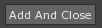

Sprites
This lesson covers using the Sprite component, importing a SpriteSource, and applying a SpriteSource to an object. Sprite animations ares also covered.
Create a New Project
Creating a Sprite
- Command :
CreateSpriteor - Select the Sprite object
- In the Projects Window
- Set Name to: Player
- Save the project
Sprite Component
The Sprite component encompasses the properties that will determine the visual representation of the SpriteSource on a per object level. This means that settings such as whether or not the SpriteSource should be flipped horizontally/vertically, whether or not it should be animating, the animation speed, and which SpriteSource should currently be used are accessible from the Sprite component.
Adding a SpriteSource
- Open the Zero Search Window
- Enter command: Add
- The Add Content window will appear
- Select SpriteSource
- Click the File button to open up the file dialog
{kind=link}
- Locate and select the provided image file named: “PlayerRun.png” in the Assets folder for this snippet.
The SpriteSource Importer window should open:
{kind=link}
SpriteSource Importer
The SpriteSource importer allows you to preview and define how the sprite animation is laid out before the SpriteSource is created. This includes specifying details such as the number of frames the sprite sheet has per row, the number of rows, and several other customizable properties. One important one to note is the PixelsPerUnit, which most games typically do not want to change.
We need to tell the SpriteSource importer that this sprite sheet has 8 frames of animation.
In the SpriteSource Importer Window
Set FramesPerRow to: 8


- Click the  button
The SpriteSource Tag should appear in the Library Window because we now have an imported SpriteSource in our project.
- Select the Player object
- In the Properties Window
- Under Sprite
- Set SpriteSource to: PlayerRun
- Under Sprite
{kind=link}
The Player object’s Sprite should now be animating. You turn the animation on and off with the AnimationActive property. Keep in mind that this stops the animation. If you want to pause the animation, you can set the AnimationSpeed property to zero, and then unpausing is simply setting it back to a non-zero value.
Now we know how to create a SpriteSource with animations.
| orphan: |
|---|